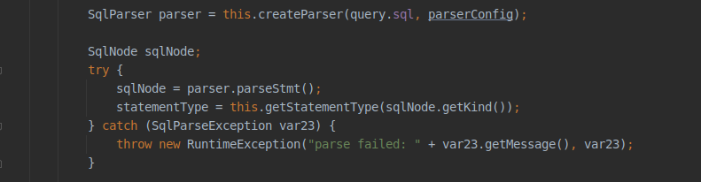
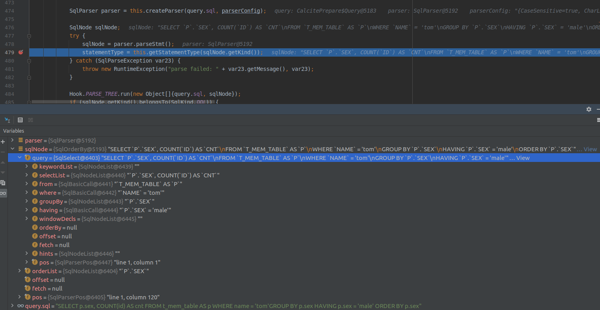
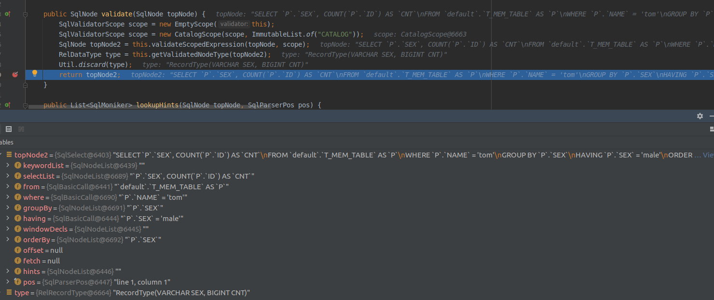
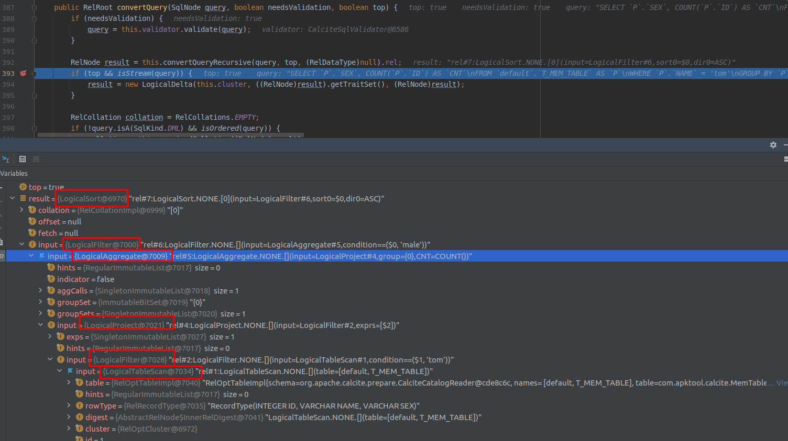
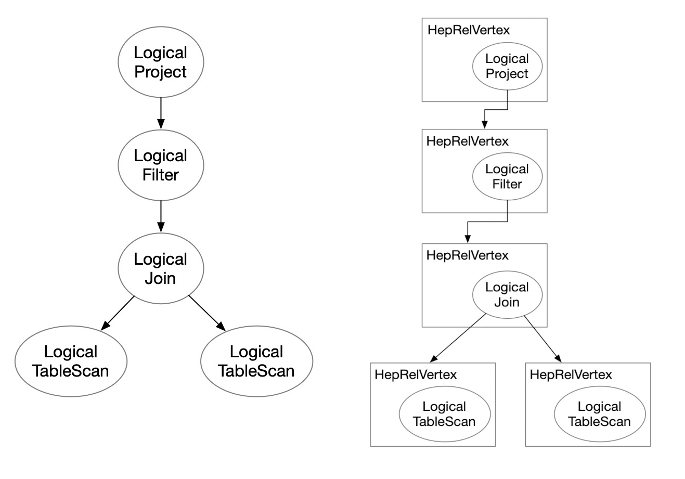
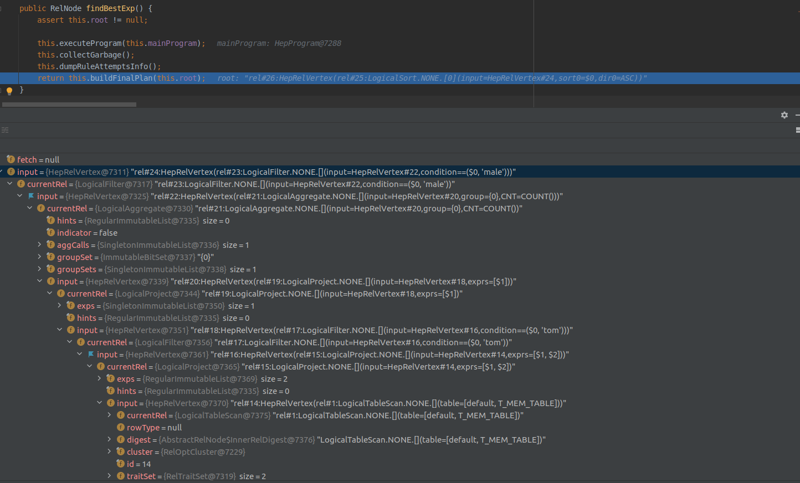
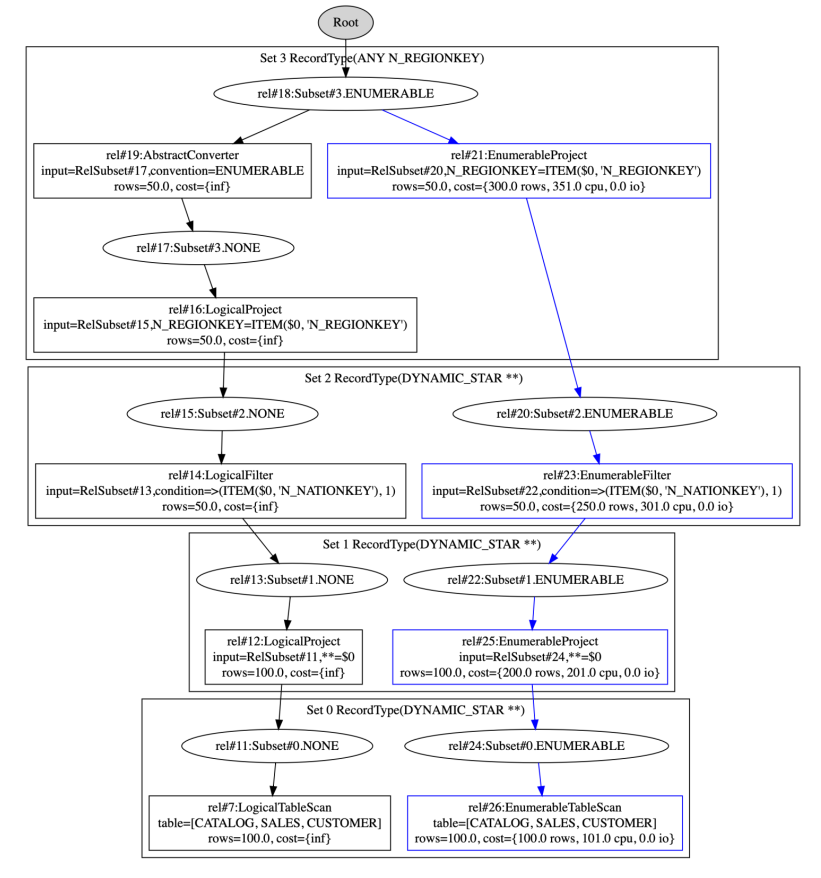
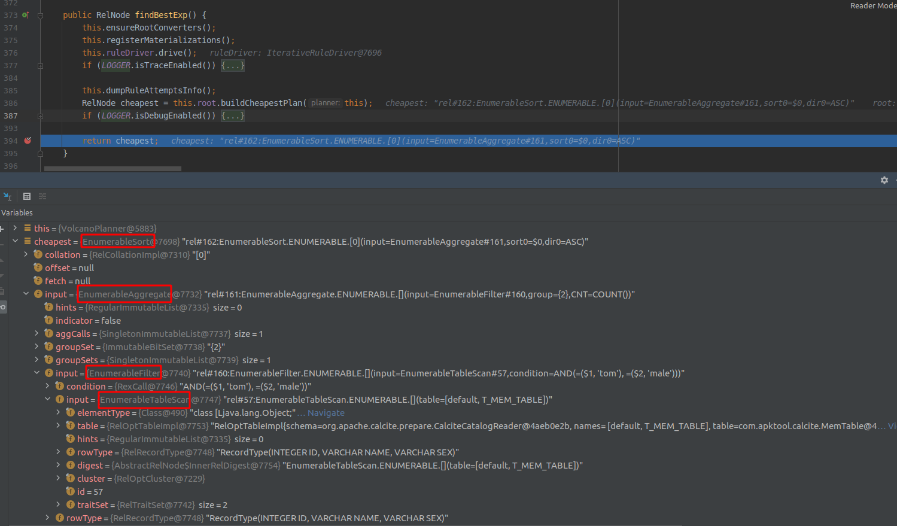
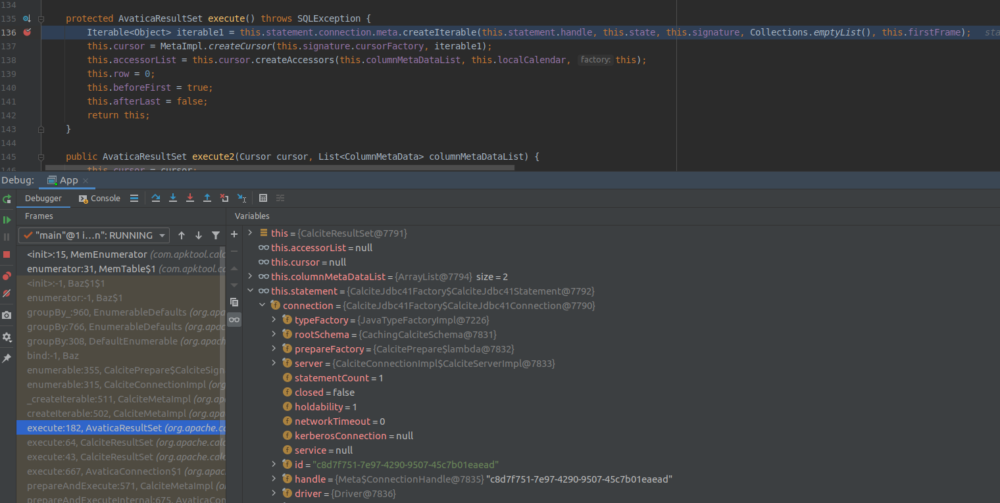
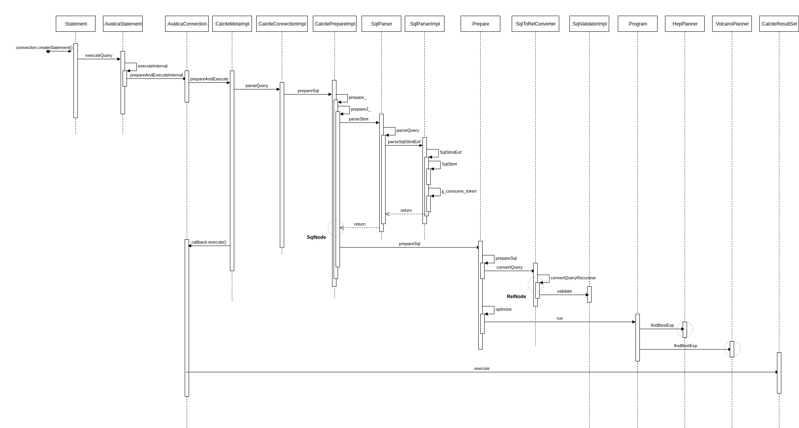

Ch02-Calcite 执行流程
June 7, 2021
Apache Calcite 是一种提供了标准的 SQL 语言、多种查询优化和连接各种数据源基础框架，可以让用户轻松的接入各种数据，并实现使用 SQL 查询。此外，Calcite 还提供了 OLAP 和流处理的查询引擎。
1. 处理流程 #
但这里为了讲述方便，把 SQL 的执行分为下面五个阶段（跟上面比比又独立出了一个阶段）：
- 解析 SQL，把 SQL 转换成为 AST（抽象语法树），在 Calcite 中用 SqlNode 来表示；
- 语法检查，根据数据库的元数据信息进行语法验证，验证之后还是用 SqlNode 表示 AST 语法树；
- 语义分析，根据 SqlNode 及元信息构建 RelNode 树，也就是最初版本的逻辑计划（Logical Plan）；
- 逻辑计划优化，优化器的核心，根据前面生成的逻辑计划按照相应的规则（Rule）进行优化；
- 物理执行，生成物理计划，物理执行计划执行。
这里只关注前四步的内容，会配合源码实现以及一个示例来讲解。
id | name | sex
:---|:-----|:---
0 | bob | male
1 | tom | male
2 | tom | female
2. SQL 解析阶段（SQL–>SqlNode） #

Calcite 使用 JavaCC 做 SQL 解析，JavaCC 根据 Calcite 中定义的 Parser.jj 文件，生成一系列的 java 代码，生成的 Java 代码会把 SQL 转换成 AST 的数据结构（这里是 SqlNode 类型）。

3. SqlNode 验证（SqlNode–>SqlNode） #

4. 语义分析（SqlNode–>RelNode/RexNode） #
经过第二步之后，这里的 SqlNode 就是经过语法校验的 SqlNode 树，接下来这一步就是将 SqlNode 转换成 RelNode/RexNode，也就是生成相应的逻辑计划（Logical Plan）。

2021-05-21T23:54:16,187 DEBUG [main] calcite.sql2rel: Plan after converting SqlNode to RelNode
LogicalSort(sort0=[$0], dir0=[ASC])
LogicalFilter(condition=[=($0, 'male')])
LogicalAggregate(group=[{0}], CNT=[COUNT()])
LogicalProject(SEX=[$2])
LogicalFilter(condition=[=($1, 'tom')])
LogicalTableScan(table=[[default, T_MEM_TABLE]])
5. 优化阶段（RelNode–>RelNode） #
Calcite 中关于优化器提供了两种实现：
| 优化器 | 说明 |
|---|---|
| HepPlanner | RBO 的实现，它是一个启发式的优化器，按照规则进行匹配，直到达到次数限制（match 次数限制）或者遍历一遍后不再出现 rule match 的情况才算完成； |
| VolcanoPlanner | CBO 的实现，它会一直迭代 rules，直到找到 cost 最小的 paln。 |
5.1 HepPlanner #

HepPlanner 会先将所有 relNode tree 转化为 HepRelVertex，这时就构建了一个 Graph：将所有的 elNode 节点使用 Vertex 表示，Gragh 会记录每个 HepRelVertex 的 input 信息，这样就是构成了一张 graph。在真正的实现时，递归逐渐将每个 relNode 转换为 HepRelVertex，并在 graph 中记录相关的信息。

5.2 VolcannoPlanner #

VolcanoPlanner 在优化过程中，rule 的触发会产⽣新的 RelNode, VolcanoPlanner 会把新的 RelNode 和 旧的 RelNode 都保存起来，通过⽐较代价 (cost) 的⼤⼩，选择最合适的 RelNode。新旧的 RelNode 在语义上等价，组成搜索空间，在这个搜索空间中，来⽐较 RelNode 的代价。

6. 执行阶段 #

7. 总结 #
